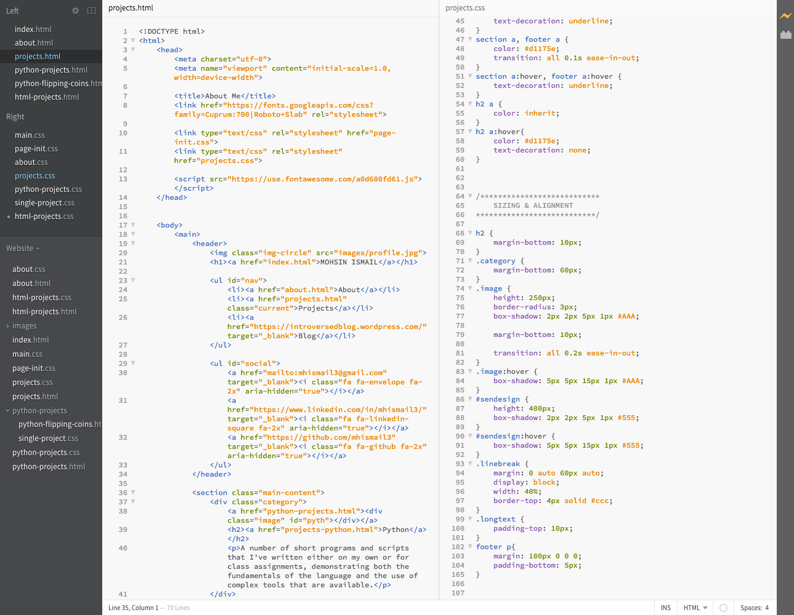

HTML & CSS
Learning these two languages has been my most recent undertaking, as well as my first foray into front-end development. I hope to develop more projects using these languages in the near future, but for now, the best application of everything that I've learned is website itself.

Brackets has a pretty slick interface.
My portfolio site is coded entirely by me in HTML and CSS, using the Brackets application for Mac. I'm constantly implementing all of the things that I learn to make this site more professional and responsive.
Take a look around this site to get a better idea of some of the design elements that I use. And if you want to see the code, visit the GitHub repository here.